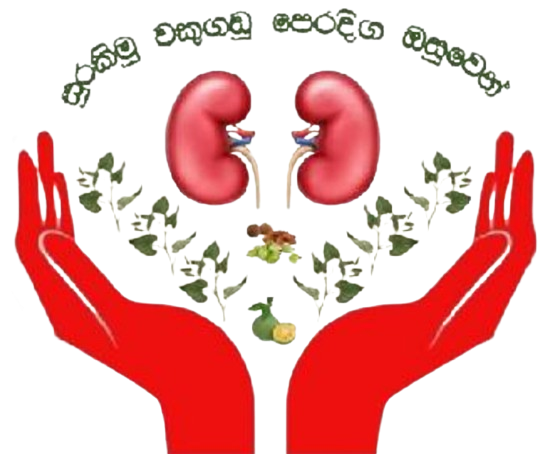

<div class="outer">

  <div class="inner-left">
    <div class="hamberger-item">
      <button class="btn" type="button" data-bs-toggle="offcanvas" data-bs-target="#offcanvasScrolling" aria-controls="offcanvasScrolling">
        <svg xmlns="http://www.w3.org/2000/svg" width="30" height="30" fill="currentColor" class="bi bi-list" viewBox="0 0 16 16">
          <path fill-rule="evenodd" d="M2.5 12a.5.5 0 0 1 .5-.5h10a.5.5 0 0 1 0 1H3a.5.5 0 0 1-.5-.5m0-4a.5.5 0 0 1 .5-.5h10a.5.5 0 0 1 0 1H3a.5.5 0 0 1-.5-.5m0-4a.5.5 0 0 1 .5-.5h10a.5.5 0 0 1 0 1H3a.5.5 0 0 1-.5-.5"/>
        </svg>
      </button>

      <div class="offcanvas offcanvas-start" data-bs-scroll="true" data-bs-backdrop="false" tabindex="-1" id="offcanvasScrolling" aria-labelledby="offcanvasScrollingLabel">
        <div class="offcanvas-header">
          <h5 class="offcanvas-title" id="offcanvasScrollingLabel">Offcanvas with body scrolling</h5>
          <button type="button" class="btn-close" data-bs-dismiss="offcanvas" aria-label="Close"></button>
        </div>
        <div class="offcanvas-body">
          <p>Try scrolling the rest of the page to see this option in action.</p>
        </div>
      </div>
    </div>
  </div>

  <div class="inner-right">
    <div class="notification">
      <svg xmlns="http://www.w3.org/2000/svg" width="18" height="18" fill="currentColor" class="bi bi-bell" viewBox="0 0 16 16">
        <path d="M8 16a2 2 0 0 0 2-2H6a2 2 0 0 0 2 2M8 1.918l-.797.161A4 4 0 0 0 4 6c0 .628-.134 2.197-.459 3.742-.16.767-.376 1.566-.663 2.258h10.244c-.287-.692-.502-1.49-.663-2.258C12.134 8.197 12 6.628 12 6a4 4 0 0 0-3.203-3.92zM14.22 12c.223.447.481.801.78 1H1c.299-.199.557-.553.78-1C2.68 10.2 3 6.88 3 6c0-2.42 1.72-4.44 4.005-4.901a1 1 0 1 1 1.99 0A5 5 0 0 1 13 6c0 .88.32 4.2 1.22 6"/>
      </svg>
    </div>
    <div class="user-detail">
      <label>Dr Ravindu Wanshanatha</label>
      
    </div>

  </div>
</div>
